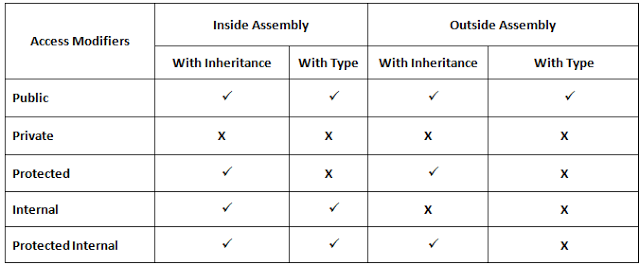

Internal vs. Private Access Modifiers
What is the difference between the internal and private access modifiers
in C#?
Answer
internal is for assembly scope (i.e. only accessible from code in the same .exe or .dll)
private is for class scope (i.e. accessible only from code in the same class).
Suggest
Find an explanation below. You can check this link for more details - http://www.dotnetbull.com/2013/10/public-protected-private-internal-access- modifier-in-c.html
Private: - Private members are only accessible within the own type (Own class).
Internal: - Internal member are accessible only within the assembly by inheritance (its derived type) or by instance of class.

Reference :